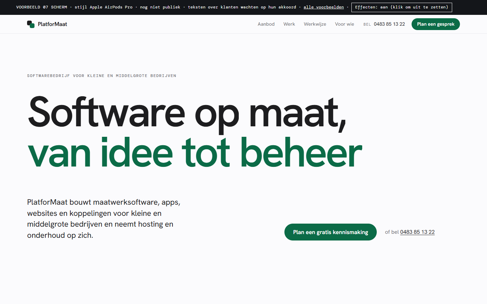
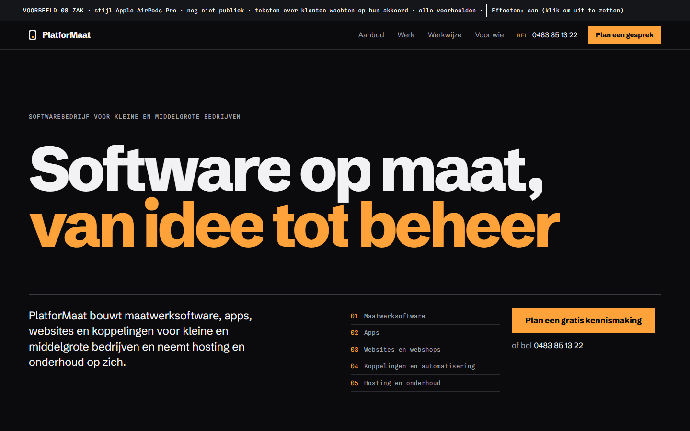
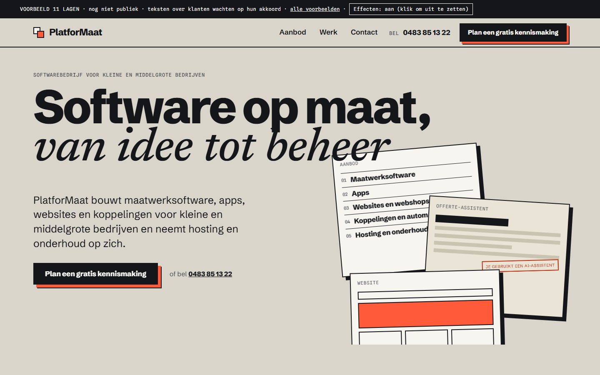
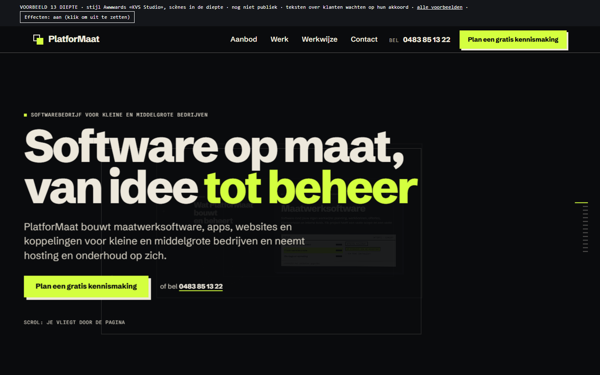
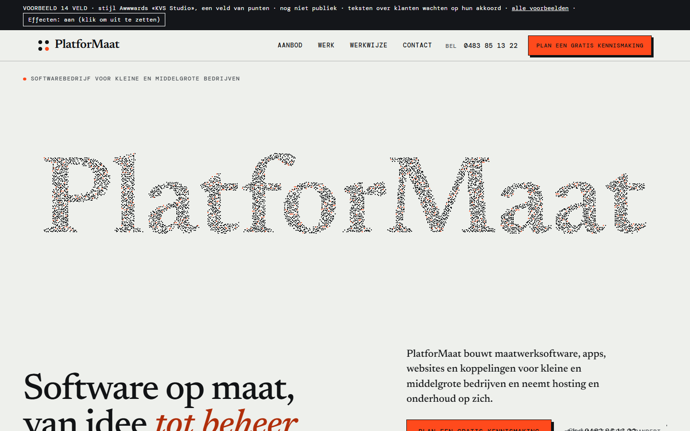

Acht nieuwe voorbeelden, twee per stijl
Elk voorbeeld is één lange homepage, bedoeld om te vergelijken. Het gekozen voorbeeld wordt later de volledige site. Scroll rustig door elk voorbeeld: de beweging zit in het scrollen.
Zie je weinig beweging? Dan staat in Windows «Animatie-effecten» uit (Instellingen, Toegankelijkheid, Visuele effecten). Elke site volgt die instelling. Bovenaan elk voorbeeld staat een knop Effecten: aan/uit; daarmee toon je de beweging toch.
Concept, niet publiek bedoeld. Niet indexeren.
Stijl Apple AirPods Pro
Eén ding vastgepind in beeld terwijl scrollen het laat veranderen: draaien, inzoomen, uit elkaar halen. Grote koppen, veel lucht. Bekijk de referentie.
07 Scherm
Licht. Een app-venster dat in lagen uit elkaar schuift in 3D.

Open Scherm08 Zak
Donker. Een telefoon die meedraait terwijl het scherm per aanbod wisselt.

Open ZakStijl Locomotive
Reusachtige typografie die regel voor regel binnenkomt, zijwaarts scrollen, kleurvlakken die elkaar wegvegen. Bekijk de referentie.
Stijl Linear
Echte productschermen in HTML, over en tegen elkaar. Precies, ingetogen, het product bestaat. Bekijk de referentie.
11 Lagen
Licht, betonkleur en seinoranje. Bladen die over elkaar schuiven; de offerte bouwt zichzelf bij het scrollen.

Open Lagen12 Palet
Donker. Een werkbank-app die zichzelf bedient, met een werkend commandopalet (Ctrl+K).
 Open Palet
Open Palet
Stijl KVS Studio
Een scène met diepte: scrollen beweegt de camera door de ruimte. Zwaarste stijl, zonder bibliotheek gebouwd. Bekijk de referentie.
13 Diepte
Donker. Je vliegt door panelen op verschillende diepte (CSS 3D).

Open Diepte14 Veld
Licht. Een veld van punten dat het woord vormt en op je muis reageert (WebGL).

Open Veld